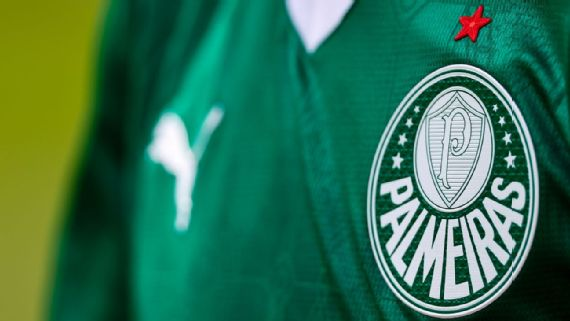
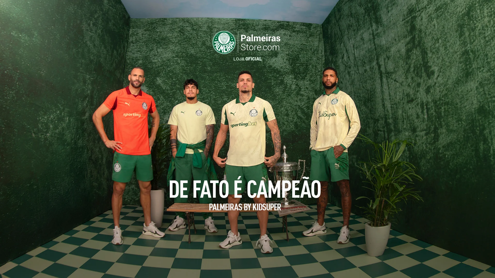

Palmeiras fecha mês com superávit milionário e ultrapassa R$ 1 bi em receitas no ano
Segundo apurou a ESPN, o Palmeiras encerrou 2025 com um novo faturamento recorde em sua história.

PUMA e Palmeiras apresentam nova linha de treino e viagem seguindo inspiração nas raízes italianas
A marca alemã fornece uniformes, roupas de treino e, recentemente, lançou a coleção 2026, com foco nas origens italianas do Verdão, além de tênis casuais como o Dista Runner SEP

Palmeiras derrota Fluminense e mantém liderança do Brasileiro
Verdão abre 2 a 0 no primeiro tempo, sofre pressão na etapa final, mas confirma triunfo por 2 a 1 pelo Brasileiro

Emi Martínez desfalca treino do Palmeiras por dores na panturrilha
o volante Emi Martínez iniciou tratamento com o Núcleo de Saúde devido a dores na panturrilha esquerda.

Aranha
goleiro

Carlos Miguel
goleiro

Marcelo Lomba
goleiro

Benedetti
Zagueiro

Bruno Bruno Fuchs
Zagueiro

Gustavo gomez
Zagueiro

Murilo
Zagueiro

Augostin giay
lateral-direito

khellven
lateral-direito

Jefte
lateral esquerdo

Joaquin piquerez
lateral-esquerdo

andreas pereira
meio-campista

Emiliano martinez
meio-campista

felipe anderson
meio-campista

figuereido
meio-campista

larsson
meio-campista

lucas envangelista
meio-campista

Marlon freitas
meio-campista

Mauricio
meio-campista
felipe anderson
meio-campista

Allan
atacante

jhon arias
atacante
felipe anderson
atacante

Luighi
atacante

Paulinho
atacante